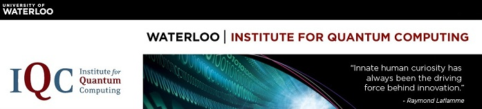

O Instituto de Computação Quântica(){
Entrevista
Por: Fellipe Augusto Alves Gurgel

printf: O que é o Instituto de Computação Quântica e como você chegou até ele?
Michele: Em 1999, eu comecei um grupo de computação quântica dentro do Centro de Pesquisa de Criptografia Aplicada na Universidade de Waterloo, e comecei a colaborar com os meus colegas na Faculdade de Ciências para expandir o grupo em um centro multidisciplinar.
Este esforço foi lançado para uma escala muito maior, graças à visão e generosidade de Mike Lazaridis, inventor do BlackBerry, que estava no processo de criação do Instituto Perimeter de Física Teórica em Waterloo para se concentrar em pesquisas sobre física fundamental. Juntamente com Raymond Laflamme e com o apoio de muitos colegas da Universidade de Waterloo, cofundamos o Instituto de Computação Quântica dentro das faculdades de Matemática, Ciências e Engenharia da Universidade de Waterloo, visando crescer para 30 faculdades, 50 pós-doutorados e 125 estudantes.
| Resposta Original: |
In 1999 I started a quantum computing group within the Centre for Applied Cryptographic Research at the University of Waterloo, and started collaborating with my colleagues in the Faculty of Science to expand the group into a multi-disciplinary, multi-faculty centre. |
Michele: Temos muita experiência em áreas como:
- Teoria da Informação Quântica;
- Algoritmos quânticos e Complexidade;
- Correção de Erro Quântico e Tolerância a Falhas;
- Criptografia quântica;
- Implementação do Processamento da Informação Quântica baseado em rotações do spin (Spin-Based);
- Implementação do Processamento da Informação Quântica baseado em Nanoeletrônica (Nanoelectronics-Based);
- Implementação do Processamento da Informação Quântica óptica.
Há dezenas e dezenas de projetos. Por exemplo, recentemente começaram duas iniciativas de formação principais: uma em interferometria de nêutrons; e outra em criptografia em um mundo quântico.
Dê uma olhada nesta notícia: Cientistas do IQC recebem subvenções para treinar a próxima geração de pesquisadores (Em Ingês)
Projetos de pesquisa específicos incluem a preparação de um link de comunicação quântica com um satélite em órbita.
| Resposta Original: |
We have critical mass of expertise in areas including:
|
Conheça mais sobre o Instituto de Computação Quântica visitando o site.
}